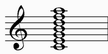
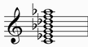
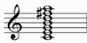
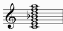
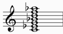
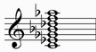

See alsto the COMPARATIVE TABLE below
| GRADE | NAME | NOTES | NOTES TRANSPOSED IN C |
| I | IONIAN | |
|
| II | DORIAN | |
|
| III | PHRYGIAN | |
|
| IV | LYDIAN | |
|
| V | MIXOLYDIAN | |
|
| VI | AEOLIAN | |
|
| VII | LOCRIAN | |
|
IONIAN |
|
Alternative names: Major, Diatonic, Greek Lydian, Hypolydian
It starts from the first grade of major scale
Structure: 2212221
| chords over first notes: | ||
| Triad: | Seventh chord: | Complete chord: |
| major | major seventh | |
 |
 |
 |
Chord simbols: C, Cmaj7, C6, C^, Cmaj7(9), C^9, C6/9
DORIAN |
|
Alternative names: Greek Phrygian, Hypomixolydian
It starts from the second grade of major scale
Structure: 2122212
As we can see from the structure, this is a palindromic mode
| chords over first notes: | ||
| Triad: | Seventh chord: | Complete chord: |
| minor | minor seventh | |
 |
 |
 |
Chord simbols: Cm, Cm7, Cm9, Cm11, Cm13, Cm6, Cm6/9
PHRYGIAN |
|
Alternative names: Greek Dorian, Hypoaeolian, Maqam Kurd, Major Inverse
It starts from the third grade of major scale
Structure: 1222122
| chords over first notes: | ||
| Triad: | Seventh chord: | Complete chord: |
| minor | minor seventh | |
|
|
 |
Chord simbols: Cm, Cm7, Cm7(b9), Cm11(b9), Cm11(b9 b13)
Enharmonic chord simbols: Csus(b9)
LYDIAN |
|
Alternative names: Greek Hypolydian, Hypolocrian
It starts from the fourth grade of major scale
Structure: 2221221
| chords over first notes: | ||
| Triad: | Seventh chord: | Complete chord: |
| major | major seventh | |
|
|
 |
Chord simbols: C, Cmaj7, C6, C^, Cmaj7(9), C^9, C6/9, Cmaj7(#11)
Enharmonic chord simbols: Cmaj7(b5)
MIXOLYDIAN |
|
Alternative names: Greek Hypophrygian, Hypoionian
It starts from the fifth grade of major scale
Structure: 2212212
| chords over first notes: | ||
| Triad: | Seventh chord: | Complete chord: |
| major | dominant | |
|
 |
 |
Chord simbols: C, C7, C9, C11, C13, Csus, C7sus, C9sus, C13sus
AEOLIAN |
|
Alternative names: Natural Minor, Pure Minor, Ancient Minor, Greek Hypodorian, Hypodorian
It starts from the sixth grade of major scale
Structure: 2122122
| chords over first notes: | ||
| Triad: | Seventh chord: | Complete chord: |
| minor | minor seventh | |
|
|
 |
Chord simbols: Cm, Cm7, Cm9, Cm11, Cm7(b13), Cm9(b13)
Enharmonic chord simbols: Cm7(#5), Cm9(#5)
LOCRIAN |
|
Alternative names: Half Diminished, Greek Mixolydian, Hypophrygian
It starts from the seventh grade of major scale
Structure: 1221222
| chords over first notes: | ||
| Triad: | Seventh chord: | Complete chord: |
| diminished | half diminished | |
 |
 |
 |
Chord simbols X: Cm7(b5), CØ, Cm7(b5 b9), CØ(b9)
From the brighter mode (Lydian) to the darker one (Locrian)
In the middle there is the Dorian mode
| LYDIAN | C | D | E | F# | G | A | B | C | |||||
| IONIAN | C | D | E | F | G | A | B | C | |||||
| MIXOLYDIAN | C | D | E | F | G | A | Bb | C | |||||
| DORIAN | C | D | Eb | F | G | A | Bb | C | |||||
| AEOLIAN | C | D | Eb | F | G | Ab | Bb | C | |||||
| PHRYGIAN | C | Db | Eb | F | G | Ab | Bb | C | |||||
| LOCRIAN | C | Db | Eb | F | Gb | Ab | Bb | C |